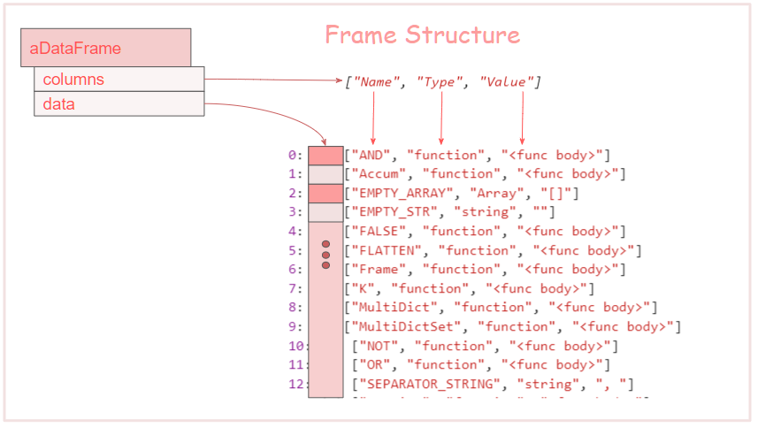

Options
Contents
2.1 Frame attributes
2.1.1 length property
2.1.2 columns property
2.1.3 data property
0.2 Counting groups
Click to show TOC
we have to bring in the str-data-frame npm module. We have several choices, using javascript es6+ module symtax, using webpack or similar bundler, or just as a script. For rhe purposed of this tutorial I am using the good old script method. I creates in the global namesapce DataFrame variable.
Lets do a quick look a what is defined in the package. In this html page we use the following unpkg.com to load the str-data-frame package. The exported name from the Package is DataFrame.
<script src="https://unpkg.com/str-data-frame@0.2.18/dist/bundle.js"></script>
Get the names (keys) in the module using Object.keys(DataFrame)
map the list of names to name/value pair [name, value]
map the [name, value] to [name, type of value, display string for the value]
result is put into data
Note: We use he two following helper function
Display function D(value)
function D(d) {
if(d === undefined ) return "<undef>";
if(typeof d === 'function') return "<func body>";
if(d instanceof Date) return d.toString;
if(typeof d === 'object') return JSON.stringify(d)
return d.toString();
}
function getType(d) {
if(d === undefined) return 'undefined'
if(Array.isArray(d)) return 'Array';
if(isClass(d)) return "class";
return typeof d;
}

This property gives us the number of rows in a frame and is just a shorthand for df.data.length
This give us the names of the columns
This is the data actual in the Frame df
This data is just the array used to create the frame in the first place
The row data is rather anoying to to access the data so a proxy object is created refered to as a RowObject what allows you to access the columns by name. The implementation is very efficient and there is little penalty using it. We will discuss this a little later.
The df.find method takes a test function as its only argument, the test fuction recieves a row object for each row of the frame until matching row is found - when the function returns true. The find method returns undefined if ther is no matching row is found, otherwise find returns the matching row object.
This is a low level method and usually ther are better ways to do this.
We borrow a concept from SQL the group by - this creates groups of rows that have the same value in a set of selected column(s) and perform some operation on each of those row groups. Some of the operations include (they are all in the namesapce gb )
* gb.count // count the number of non-empty values is a group
* gb.max - // maximun value of a column in a group
As you can see every row in Frame df has a Type and a value columns. We can use the .groupBy() to do many grouping operations. The following snippets will give a flavor of the things that can be done.
The simplest use is to show the unique values of a coulmn or a set of columns, we will see more of that later.
aFrame.groupBy(['col1', 'col2' , 'col3'])
The code above will all unique combinations of col1, col2, col3
__Note: This is the simplest use of groupBy, later we will see more things you can do with this rather versitile method.
So we have 5 different values in the Type column, but we do not the se how many occurences of each of the value do we have in the Frame.
Next we will see how to use the aggrigation functons to extract more information from each group.
We can count the number using gb.count this function takes two arguments:
In this section we will show you how to reorganize rows and columns. To do this in a useful way, it is ideal to have a column that is the primary key.
To convert rows to columns of a two dimentional matrix we can use the transpose method.

Frame has a similar method, with one small addition: the column names are treated as the first row. We can see the affect of the transpose method below by transposing the frame types
You will notice the headings are just the row index.
What if we wnt to use one of the columns as the heading? Transpose supports us telling the column that should be used as the column names.
The important property of the column is that all the values must be unique. In a database we call this the unique key for each row. Although for the sake of robustness this version of transpose can deal with a few duplicate as lonk as that is rare.
In our case the 'Type' column is the unique key, and thus it has the attributes we are looking for.
This is a column uniquely identifies each row in a frame.
As you can see, columns are converted to rows, and the primary key column becomes the column headers of the new frame.